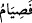

cezâlandırmanın mânâsı yoktur.
Diyet, “akl” diye isimlendirilmiştir. Çünkü “akl” engel olma mânâsınadır. Diyet,
kanın akmasına engel olur. Çünkü insan, adam öldürme sonucu diyetin olacağını
düşünerek kan dökmekten kaçınır. Şayet diyeti ödeyecek kimse yoksa üç sene zarfında
beytül-mâlden ödenir. Bu da olmazsa katilin malından ödenir.
“Eğer öldürülen mü’min olduğu halde” sizinle savaş halinde olan “size düşman
olan bir toplumdan ise” katil de bu insanın, onların arasında olması ve İslâm diyârına
hicret etmemesi yâhut bir işi için onların yanından ayrıldıktan sonra İslâm’a girmesi
sebebiyle müslüman olduğunu bilmezse “mü’min bir köle âzâd etmek lâzımdır.” Yâni
katiline keffaret gerekir, diyet gerekmez. Çünkü öldürülenin ailesi kafir ve
müslümanlarla harp hâlinde olduğu için onunla akrabası arasında verâset söz konusu
değildir. Öldürülen mü’min “eğer kendileriyle aranızda” geçici veya devamlı
“andlaşma bulunan” kâfir “bir toplumdan ise” şâyet varsa müslüman olan “âilesine
teslim edilecek bir diyet” hükmü diğer müslümanlarda olduğu gibi “ve bir mü’min
köleyi âzâd etmek gerekir. Bunları bulamayan kimsenin”, yâni sâhip olduğu âzâd
edeceği bir kölesi yoksa veyâ kendisinin ve ailesinin geçimi, mesken ve diğer zarûrî
ihtiyaçlarından fazla serveti olmadığı için köle alabilecek bir durumda değilse “Allah
tarafından tevbesinin kabûlü için peşpeşe iki ay oruç tutması lâzımdır.”
Orucun peşpeşe olmasının gerekliliği ise, oruçla keffâret veren bu kişinin iki ay içinde
bir gün oruç tutmaması veyâ başka bir oruca niyet etmesi durumunda oruca baştan
başlaması gerektiğini göstermek içindir. Ancak kaçınılması mümkün olmayan hayız,
nifas ve benzeri durumlar, peşpeşe olmaya zarar vermez. Bu keffârette fakirleri
doyurmak meşrû değildir. Bunun delîli “
”nun başında bulunan “fe” harfidir ki
zikredilen oruç keffâretinin vâcibin tamamı olduğuna delâlet eder. Rey ile kefârete
bedel olabileceğini söylemek câiz değildir, nass gerekir.
Şayet “Yanlışlıkla öldürmek masıyet olmadığı halde tevbenin ne gereği var?” denirse
ben de derim ki: Burada bir çeşit kusur vardır. Çünkü zâhir olan şu ki, kişi son derece
tedbirli olsa kendisinden bu hatâ sâdır olmazdı. Ayrıca âyette “Allah tarafından
tevbesinin kabûlü için” buyurulması, kişinin tedbiri elden bıraktığı için kusurlu
olduğuna dikkat çekmek içindir.
“Allah her şeyi” o kişinin halini, yâni öldürmeye kasd edip etmediğini “bilendir” ve
onun hakkında emrettiklerinde “hikmet sâhibidir.”
“Bunları bulamayan kimse iki ay peşpeşe oruç tutar.” âyetinin işâreti şöyledir: Malı
sarfetmek ve dünyâyı terketmek sûretiyle nefsin terbiye ve tezkiyesi; açlık, susuzluk ve
diğer mücâhede şekilleriyle terbiyesinden önce gelir. Çünkü dünyâ sevgisi bütün
kötülüklerin başıdır. O, ancak mükemmel insanların geçebileceği zor bir geçittir.
Nitekim Allah Teâlâ şöyle buyurmuştur: “Ama o, zor geçidi aşmaya girişemedi. O zor
geçidin ne olduğunu sen bilir misin? O geçit, bir köle ve esir azad etmektir.”
(Beled, 90/11-12-13)
Salikin ilk adımı dünyâ ve içindekilerden ayrılmak, ikincisi ise Allah Teâlâ’nın da